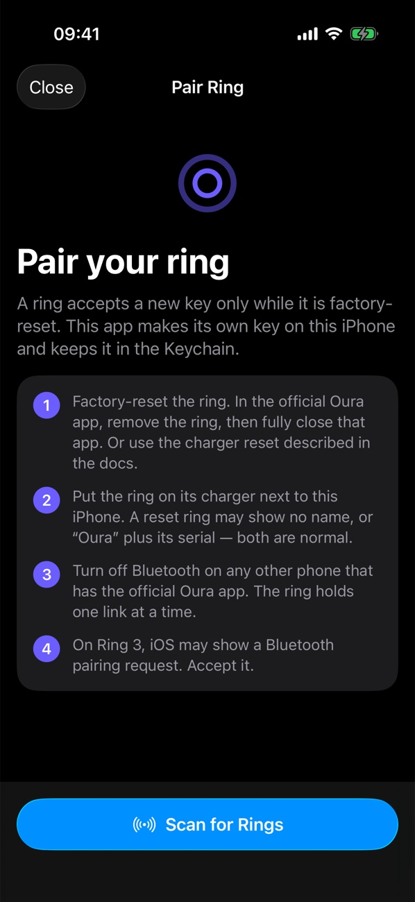
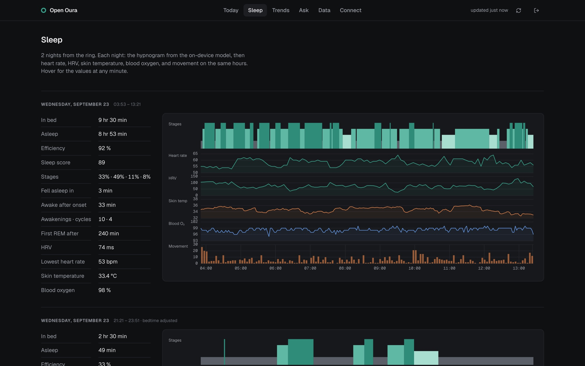

0
calls to Oura's cloud. The ring talks to your phone only.
Open Oura syncs the ring over Bluetooth, computes readiness, sleep, and activity on your iPhone, and can back up every night to a server you own. Your AI agent reads it from there.
Every screen is the real app and the real hub. The server name and the token are demo values.
Reset the ring on its charger, then pair it in the app. The app makes the key on your iPhone and keeps it in the Keychain. Oura's app and Oura's servers are out of the loop.

The app pulls the ring's history into a local database and runs the metric algorithms on the iPhone. It can write the measured data to Apple Health, day by day, with no duplicates.
Run the hub on a home server, a Steam Deck, or a Mac with one command. After each sync the phone sends the new ring data. You get a full backup, a web app, and your data while the phone is off.

The hub is an MCP server. Add one line to Claude Code, Cursor, or any MCP client, and ask it to plan your day around last night. Every answer carries how old the data is. No MCP client? The hub's Ask page runs your own Claude Code, Codex, or Cursor login on the server.
$ claude mcp add --transport http health https://…/mcp/••••get_status_now ✓
{
"last_night": {
"in_bed_h": 9.5, "efficiency_pct": 92.3,
"deep_pct": 32.6, "hrv_ms": 74, "rhr": 53
},
"vitals": { "hrv_ms": { "latest": 36, "baseline": 74 } },
"freshness": { "ring_last_sync_age_h": 0.7 }
}
The phone is the only required stop. The hub and the agent are yours to add, and yours to remove.
Records heart rate, HRV, temperature, blood oxygen, and movement.
Stores the history, computes the scores, and can write to Apple Health.
Keeps a full copy, serves the web app, and runs the MCP server.
Reads your status and plans with it. Only agents with your token get in.
You need a Mac with Xcode, an iPhone and its cable, and the ring's charger. A free Apple ID works.
One script builds the app, finds your Apple team and your iPhone, and installs it.
git clone https://github.com/KenWuqianghao/open_health.git && cd open_health && ./apps/ios/install.shFlip the charger with the ring on it until each light shows. Then tap Scan for Rings in the app.
On your server, one script. Then scan the QR code on the hub's Connect page with the iPhone Camera.
git clone https://github.com/KenWuqianghao/oura-hub.git && cd oura-hub && ./deploy/install.shNot at the same time. A ring holds one key, so the reset removes Oura's key. To go back, reset the ring again and set it up in the official app. Sync the official app one last time before you switch.
No. The app talks to the ring over Bluetooth and keeps the data on the iPhone. It sends data to one place only: the hub you run, and only after you connect it.
Oura Ring 3 (Gen3), Ring 4, and Ring 5, which use the same protocol. The pairing and sync were tested on a Ring 3 Horizon and a Ring 5. The app is iPhone only for now, iOS 17 or newer.
It is not on the App Store. The install script builds it with Xcode and your Apple ID. With a free Apple ID the app runs for 7 days per install; run the script again to renew it. Your data stays on the phone.
No. The app works alone. The hub adds a backup, a web app, remote access, and MCP for an AI agent. It runs on any computer that stays on.
Sleep stages, cardiovascular age, and workout detection use Oura's own on-device models. Those files are Oura's property and are not in these repositories. Without them you still get heart rate, HRV, blood oxygen, temperature, steps, energy, time in bed, and the scores. The guide shows how to add the models from your own copy of the official app.
No. Open Oura is an independent open-source project. It is not made, supported, or approved by Oura.
open_oura by Thomas Marchand (@Th0rgal_) reverse-engineered the ring's Bluetooth protocol, authentication, and event format, and ported the metric algorithms. Open Oura adds the iPhone app polish, the self-hosted hub, and the one-command setup on top.